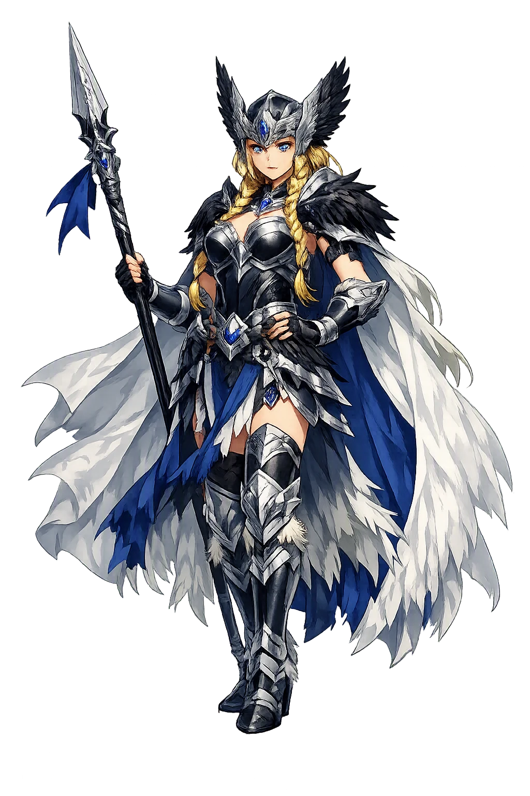
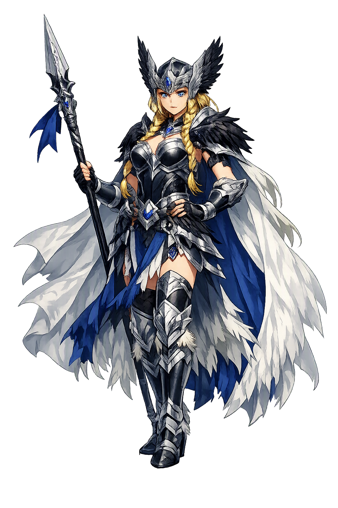

The Authentic Orthography
Valkyrie, Shieldmaiden · Armor battle

Unicode restoration and ASCII comparison
ᛒᚱᚢᚾᚼᛁᛚᛏᚱ
The name in its original Norse form. Brynhildr (ᛒᚱᚢᚾᚼᛁᛚᛏᚱ) is attested in the source tradition — “Armor battle”. Its original diacritics and script distinctions carry the full phonetic and orthographic weight of the source tradition.
brynhildr
The plain brynhildr form is identical to the Unicode restoration. Because this name is already written in Latin letters, no diacritics, stress, or script information were lost — only capitalization differs.
Brynhildr
The Unicode restoration does not need to recover lost marks for Brynhildr. Its value is canonical spelling and consistent cataloguing, not the reconstruction of erased orthography. The domain is readable as-is to both DNS and humanity.
Brynhildr.com → brynhildr.com
The non-ASCII characters in Brynhildr are encoded while the ASCII remains visible. To the DNS, it is Punycode. To humanity, it is Brynhildr.
How Brynhildr travels from ancient script to the modern URL
Owned, ideal, and ASCII forms of Brynhildr
Brynhildr
Restores ᛒᚱᚢᚾᚼᛁᛚᛏᚱ. The full Unicode restoration. brynhildr.com is not in the PuniCodex collection — it is watched for release; if it drops, this temple upgrades to an owned flagship.
How Brynhildr was spoken
The Sleep-Thorn, the Wall of Flame, and the Pyre of the Dragonslayer
Brynhildr is the valkyrie of the Vǫlsung cycle: the battle-maid Óðinn pricked with the sleep-thorn for defying his judgment, the shieldmaiden Sigurðr woke behind a wall of flame, the sworn beloved whom a draught of forgetfulness and a changed shape betrayed — and the woman who would not outlive the deceit, burning herself on the dragonslayer's pyre with a drawn sword between them.
Svefnþorn — the thorn Óðinn struck her with for giving victory against his word: sleep as sentence, and the beginning of the whole tragedy.
The flickering wall of flame around her hall on Hindarfjall — crossable only by Grani, only by Sigurðr, and later only by a borrowed shape.
Gramr laid naked between the lovers three nights — and laid between them again on the pyre, the sign of the bed that was never shared.
The ring from the dwarf's hoard, taken in the exchanged shapes and produced at the quarrel — the small gold proof that undid a kingdom.
Stories of Brynhildr
Brynhildr's story is the tragic core of the Vǫlsung cycle — told across Sigrdrífumál, the Guðrún poems, Sigurðarkviða hin skamma, Helreið Brynhildar, and Vǫlsunga saga with a consistency the corpus rarely achieves: the sentence, the waking, the oath, the deceit, the quarrel, the pyre.
The prose frame of Sigrdrífumál gives her the name Sigrdrífa, 'victory-urger', and tells how she fell: two kings fought, Hjálmgunnarr the old and Agnar the young, and Óðinn had promised the victory to Hjálmgunnarr. The valkyrie judged otherwise and gave the day to Agnar. Óðinn pricked her with the sleep-thorn in revenge and declared she should never again fight in victory and should be given in marriage — and she answered that she had bound herself with an oath to wed no man who knew fear. The whole tragedy is already here: a woman whose only crime was an independent verdict, sentenced to sleep until a fearless man should come.
Sigurðr, fresh from Fáfnir's hoard, saw a light on Hindarfjall as though a fire burned to the sky, and rode Grani through the vafrlogi — the horse would take no other rider through that flame. Within the wall stood a hall, and in the hall a figure in full armor. He cut the byrnie from her with Gramr, from the neck down, for it had grown fast to her flesh, and she woke and asked what had strength to break her sleep. 'Sigmundr's son,' he answered, 'with the sword that has lately slain Fáfnir.' She taught him then the runes of victory and the counsels of Sigrdrífumál — how to carve, how to trust, how to beware — and they plighted their troth, the valkyrie and the dragonslayer, before fate had its word.
At the court of Gjúki, Queen Grímhildr gave Sigurðr a draught of forgetfulness, and the memory of Brynhildr went out of him like a light; he married Guðrún and swore brotherhood with Gunnarr and Hǫgni. Then Gunnarr desired Brynhildr — but his horse would not take the flame. By Grímhildr's craft the two men exchanged shapes: Sigurðr rode the vafrlogi in Gunnarr's form, won the bride for his sworn brother, and lay three nights beside her with the drawn sword Gramr between them. Before they parted he took from her hand the ring Andvaranautr and gave her another ring from Fáfnir's hoard. Every element of the catastrophe is a theft so small it could hide in a draught, a shape, a ring.
It broke at the river. Brynhildr and Guðrún went to the water to wash their hair, and Brynhildr waded the farther out, for her husband had ridden the flame, and Gunnarr's was the greater deed. Guðrún answered with the truth: it was Sigurðr who rode through in Gunnarr's shape — and she held up Andvaranautr, the ring taken from Brynhildr's own hand that night, as proof. Brynhildr knew the ring and turned white as a dead woman, and went home and spoke no word that evening. The German Nibelungenlied keeps the same wound in a different key: the queens' quarrel at the minster door, and Brünhilt learning that it was Siegfried who mastered her for Gunther. In both traditions the betrayal is revealed by a woman to a woman, and the world comes down after.
Brynhildr could not live inside the deceit, and she would not let it stand: she turned Gunnarr to vengeance, and Sigurðr was slain in his bed by young Guthormr, the one brother bound by no oath — the dying hero cast Gramr after his killer and cut him in two. When Guðrún's wail rose over the body, Brynhildr laughed once, from the bottom of her heart; then she took a sword and stabbed herself, and with her death upon her gave her last commands: to be burned on the pyre beside Sigurðr, with a drawn sword between them as it had been before, 'when we both entered one bed and were called by the name of man and wife.' Helreið Brynhildar follows her past the fire: on the road to Hel a giantess by her mound chides her for the blood on her hands, and Brynhildr answers with her whole life — the sleep, the waking, the oath kept, the deceit endured. 'Let us ride together,' the poem has her say, toward the place where Sigurðr waits.
Brynhildr is the tradition's figure of the oath that outlives its world. Everything taken from her is taken by small magic — a thorn, a draught, a borrowed shape, a ring — and none of it touches the thing she actually is: the woman who judged rightly against a god, who asked only for a man without fear, and who kept her account with the truth to the last breath. Her one laugh, heard as the world breaks, is among the most unsettling sounds in the Edda; her pyre, with the drawn sword between the dead, is its clearest statement that a marriage made by deceit could be annulled only by fire. The cycle does not ask us to forgive her vengeance. It asks whether any of the men around her — the forgetful hero, the oath-bound brothers, the scheming queen — ever matched the standard she set: to know what happened, and to refuse to pretend otherwise.
Enter Extended Lore